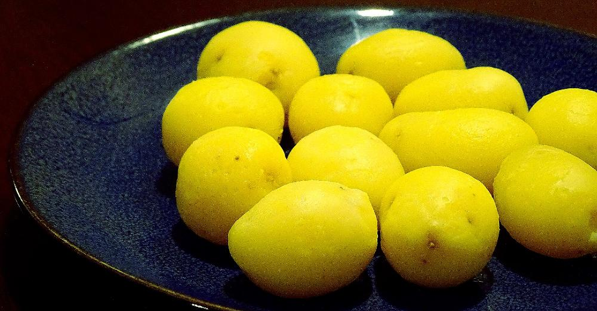
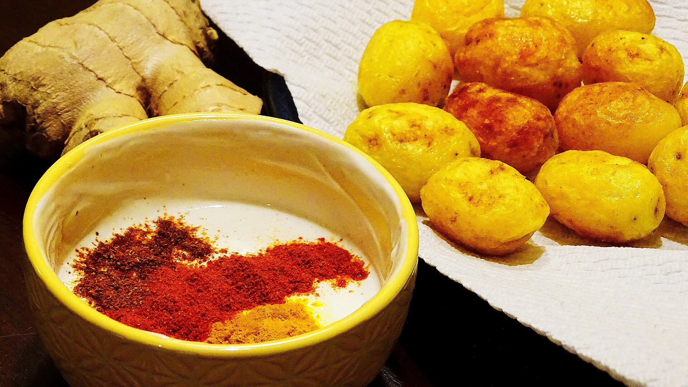

Kashmiri Dum Aloo

From my childhood, almost in every bengali wedding I have seen the famous combo of 'koraishutir kochuri' and 'kashmiri aloor dom' in the menu card. There is no question about that combo, it tastes heavenly. This dish is no onion and no garlic recipe but the attraction is its nice red color. You will need different types of spice powder for this recipe. I don't know much about kashmiri cuisin, this was my first try and I just nailed it 😊 . I served this curry in dinner with some 'jeera rice' and 'his' reaction was 👍👌... Try this in your kitchen and I truly wanna know about your family's response.

Ingredients
- 10-12 baby potatoes.
- 1 Teaspoon cumin seeds.
- 1 bay leaf.
- 4 green cardamoms.
- 6 tablespoons of curd.
- Spice powder (1 Teaspoon turmeric powder, 2 Teaspoons kashmiri red chilli powder, 2 Teaspoons red chilli powder, 2 Teaspoons garam masala powder, 1 Teaspoon dry ginger powder, 1 Teaspoon fennel powder).
- Salt and sugar.
- 8 tablespoons of white oil.
- 6 Teaspoonss of mustard oil.
- 1 Teaspoon ghee / clarified butter.
- Warm water.
Steps
Boil the potatoes with skin for 15 minutes. Then drain out the water and peel the skin.
Take a toothpick and poke some holes in them so that they can absorbe the gravy while cooking.

Heat white oil in a pan. Fry the boiled potatoes with pinch of turmeric powder and salt untill golden brown in color.
Remove them from the pan.
Add all the above mentioned powder in the curd and beat it very well. Keep it aside.

Heat mustard oil in a pan.
Add cumin seeds, green cardamoms and bay leaf. Saute it for a minute.
Bring the flame to low and add the curd mixture. Stir immediately with a spatula for 3 minutes.
Cook it for 10 minutes in medium flame.
Then add salt, sugar and some warm water. Mix it.
Add the fried potatoes. Cover the pan and cook this untill the potatoes are fully cooked.
Add one Teaspoon ghee and pinch of garam masala before turn off the heat.
Your kashmiri dum aloo is ready ...
- Enjoy this hot with kochuri, naan, paratha, jeera rice etc.

Leave Your Comments